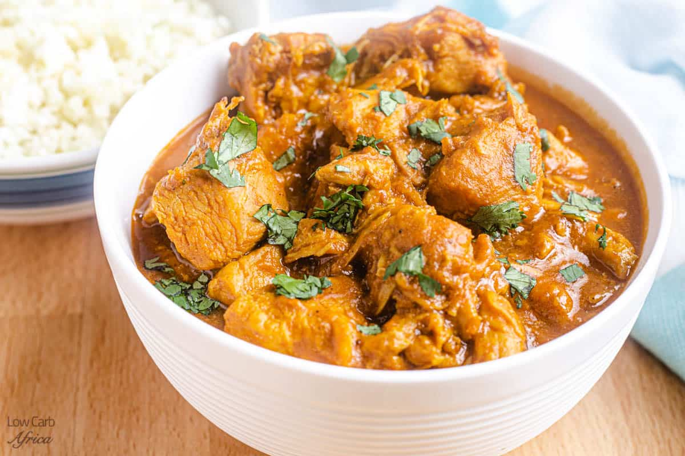

Chicken Curry

Description
Chicken cooked in an Indian style and mixed with spices to make a thick soup,
hence the name curry.
Chicken curry in most cases is served with rice, but can also go well with
mashed potatoes or pasta.
Ingredients
- Chicken preferable boneless.
- 3 large capsicums(red, yellow and green).
- Carrots.
- White onions, garlic and ginger.
- Curry powder, salt, bay leaves.
- Heavy cream.
- (Optional) Black Pepper.
Steps
- After washing your chicken, bring it boil for about 10 minutes.
- Chop off the white onions into very small pieces and in a pan of
hot oil add them.
- Cut the capsicums and blend them. Crash ginger and garlic into a thick paste.
Finely chop the carrots into small cubes.
- Take the chicken off the boiling pan and let it cool for about 5 minutes.
- Add the garlic and ginger paste into the onions and let that fry for a minute.
Be careful not to burn that as garlic burns easily.
- Add the carrots, curry powder, bay leaves, salt, pepper and the chicken together
and let them cook for about 30 minutes.
- Add a little bit of cream to make the soup thick. You can use yorghut if no heavy cream
- Tip: This meal works well with mashed potatoes. Which you will can find on
my Mashed Potatoes Recipe.